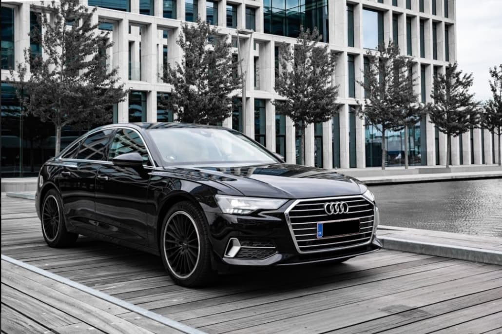

Audi A6: Teknisk avanceret direktørslæde
I denne artikel bliver Audi's nyeste model af A6'eren fremvist og beskrevet i detaljer. Fra interiøren, eksteriøren til de små nøje detaljer ingeniørne har arbejdet på.
26.marts. 2020 08:00
Artikel udarbejdet af Khizer Khan
Et indblik i Audi A6 S-line
Hvis du tror, at Audi A6 både ligner sin forgænger, men også andre modeller i sortimentet, har du ret - det er en bevidst strategi for fortrolighed. Man behøver ikke at bekymre sig om det, for det er helt klart en teknik, der fungerer både for Audi og andre mærker. Du behøver kun være opmærksom på, hvor mange biler, der er på vejen med et Audi logo på gitteret for at indse, at det er en gennemprøvet metode. Bilen er blevet introduceret og lanceret med 3.0 V6 TDI motor med 280 hestekræfter. En 8-trins automaitsk gearkasse med dobbeltkobling, således det giver en effekt af firehjulstræk.
Man må dog påpege at det er en smuk bil, med et stort gitter, der ikke er "smart i en fart", og smarte, pæne proportioner, som skjuler et interiør fyldt med den nyeste teknologi og upåklagelig byggekvalitet. Hvis du ikke ønsker denne fire-dørs A6 S-line, er der en række andre modeller i nogenlunde samme prisklasse og kaliber, henholdsvis A6 Avant, A8 Sedan og Q8 E-tron.
Formår Audi at imponere med A6's design og interiør?

Klassisk Audi: Den er upåklagligt velbygget og er i kategorien luksus biler, der angiver fantastiske følelser ligeså snart man indtræder i den. Teknologien, der tilbydes på overstående billede er en blanding af standard - og ekstraudstyr. Den har nogle smarte funktioner, herunder to skærme, som fungere med det virtuelle instrumentskærm. Den nederste skærm bruges primært til klimakontrol, sædevarme, sædemassage, og sædeindstilling. Du kan forneden se en oversigt over en række standard -og ekstraudstyr på A6'eren.
| Standardudstyr | Ekstraudstyr |
|---|---|
| 204 hk | 284 hk |
| Tophastighed: 246 km/t | Tophastighed: 246 km/t |
| Matrix LED forlygter | Dynamisk LED-pakke |
| Almindelige sæder | Sports/lædersæder |
| Sædevarme | Massage og retsvarme |
| Interiører uden læder | Interiører med læder |
Robust bil med gode teknologiske systemer
Audi har sendt bilen på gaderne med et online-assistent stemmekontrolsystem, der acceptere naturlige tale. Den er programmeret således, at den kan på baggrund af det du fortæller udføre en række opgaver. Eksempelvis kunne du fortælle systemtet at du har det varmt, så vil dette system automatisk sænke temperaturen i bilen, uden din indblanding.
Det er en direktørslæde, som har plads til hele famlien eller eksempelvis en god bil til vigtige forretningsmøder, hvor det er essentielt at være præsentabelt. Der er særdeles meget plads og skulderum sammenlignet med den tidligere generation af samme model. Det en robust og sikker bil at køre i, skulle man være uheldig at havne i en trafikulykke.